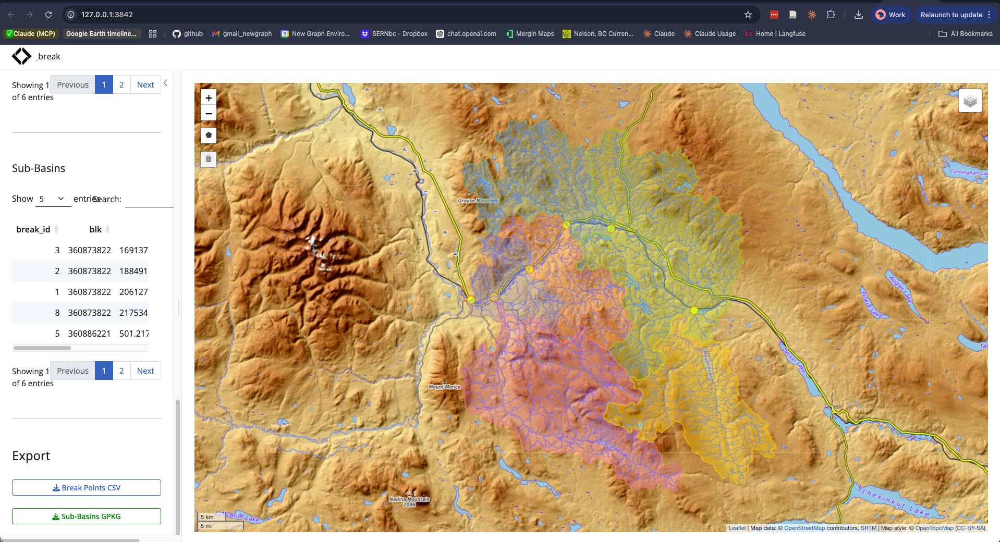

Interactive watershed break point delineation — a Shiny app for clicking stream networks to place break points, delineating upstream watersheds, and exporting sub-basins via pairwise subtraction.
Given a stream network and an area of interest, breaks lets you place points on streams, snap them to the FWA network, delineate the upstream watershed for each, and compute non-overlapping sub-basins by subtracting upstream catchments from downstream ones. Upload a CSV with extra columns — they’re preserved through snap and export.

Install
# install.packages("pak")
pak::pak("NewGraphEnvironment/breaks")Quick Start
# Requires PostgreSQL with fwapg (via fresh)
# Set PG_*_SHARE env vars for database connection
breaks::run_app()How It Works
-
Define AOI — three methods:
- Type-ahead dropdown of BC watershed groups
- Click the map to delineate an upstream watershed
- Upload a GeoPackage or GeoJSON
- Draw a polygon on the map
Place break points — click streams to place points (or upload a CSV with
lon/latcolumns). Each point snaps to the nearest FWA stream segment.Compute sub-basins — delineate the upstream watershed for each break point, then subtract upstream catchments from downstream ones (largest-first pairwise subtraction).
Export — download
break_points.csv(all columns preserved) andsubbasins.gpkg(EPSG:3005).
Part of the Ecosystem
breaks is one piece of a larger watershed analysis workflow:
| Package | Role |
|---|---|
| fresh | FWA-referenced spatial hydrology (data layer) |
| breaks | Delineate sub-basins from break points on stream networks |
| flooded | Delineate floodplain extents from DEMs and stream networks |
| drift | Track land cover change within floodplains over time |
| fly | Estimate airphoto footprints and select optimal coverage for a study area |
| diggs | Interactive explorer for fly airphoto selections (golem Shiny app) |
Pipeline: fresh (network data) → breaks (sub-basins) → flooded (floodplains) → drift (land cover change).